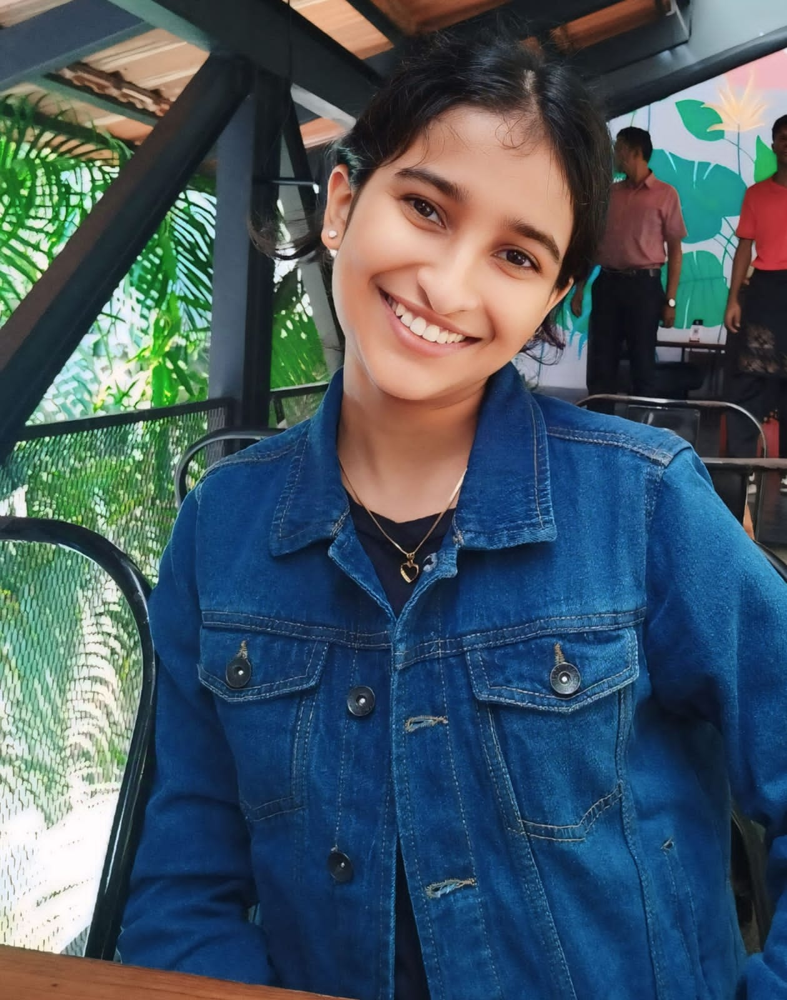

Contact Information
CVIT, KCIS Research Block
Prof. CR Rao Road Gachibowli, Hyderabad 500032, Telangana, India
Email: meghamariamkm@gmail.com
Research Interests
I am interested in computer vision, multimodal understanding, and generative models.
Research So Far
My research is at the intersection of multimodal learning, scientific media understanding, and AI for education. It focuses on enabling AI systems to effectively interpret and reason across different forms of scientific communication, including research papers, presentation slides, videos, and educational content. I have worked on fine-grained alignment across scientific media, studying vision-language and generative models, as well as developing benchmarks and datasets for robust multimodal evaluation. Through this work, I have explored both the strengths and limitations of current AI systems in scientific understanding, educational video generation, and multimodal reasoning.